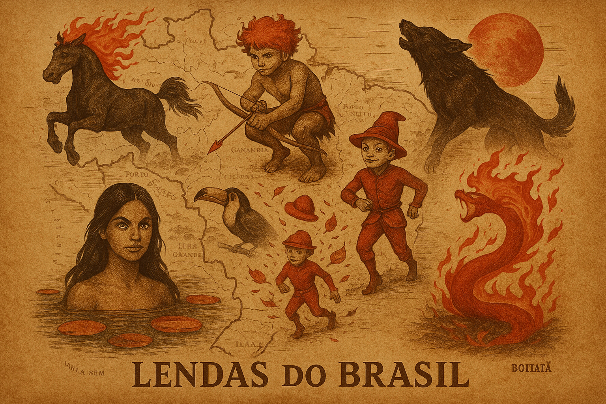
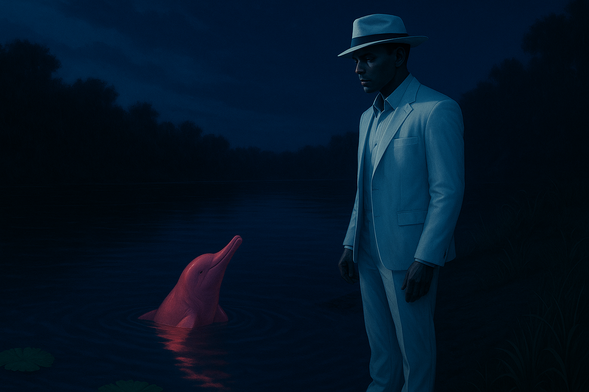
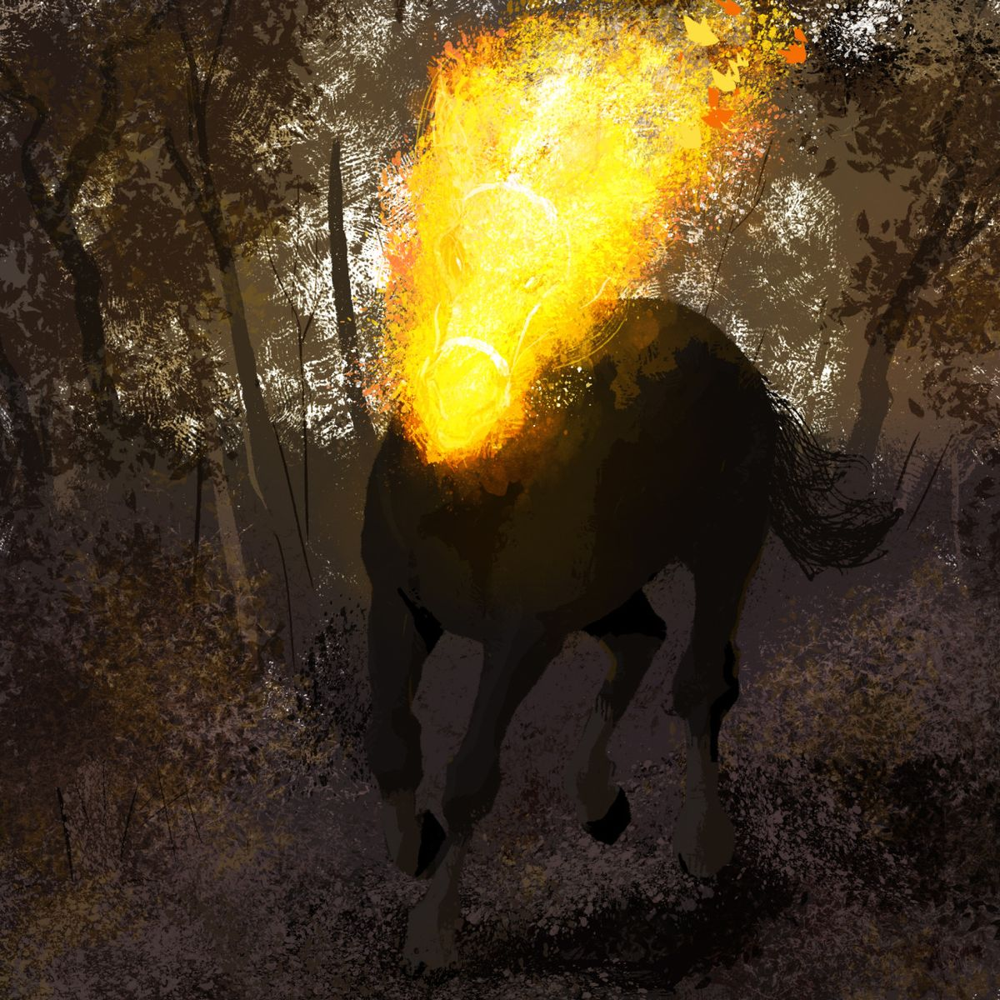
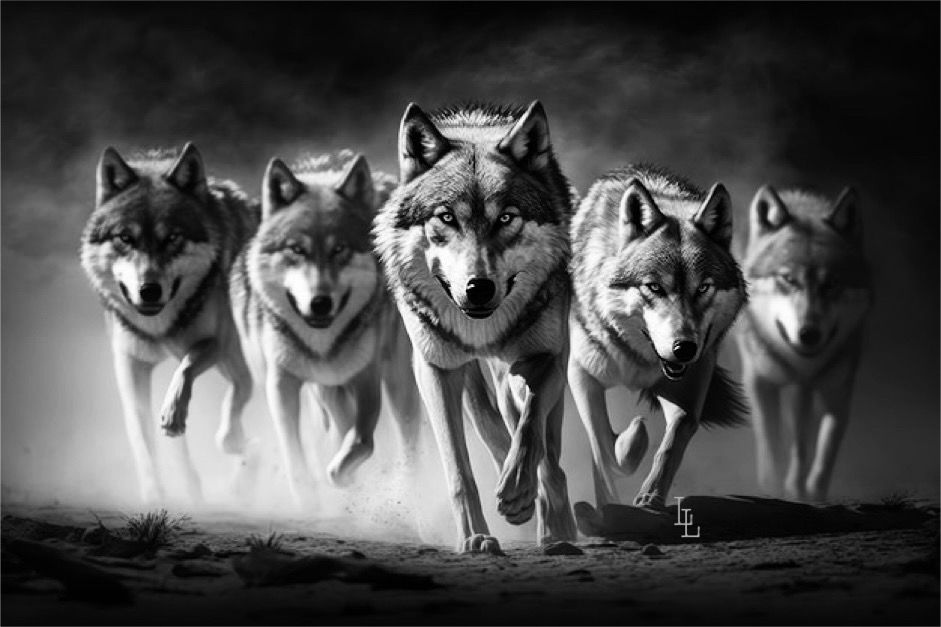

Documentários
Ver todos
O Guardião das Florestas
45 min | Documentário
Canto da Sereia
52 min | Documentário
O Travesso Brasileiro
38 min | Documentário

Lendas do Brasil
1h 20min | Série

O Sedutor dos Rios
42 min | Documentário
A Serpente de Fogo
49 min | Documentário

A Maldição da Mula
55 min | Documentário

A Transformação
47 min | Documentário